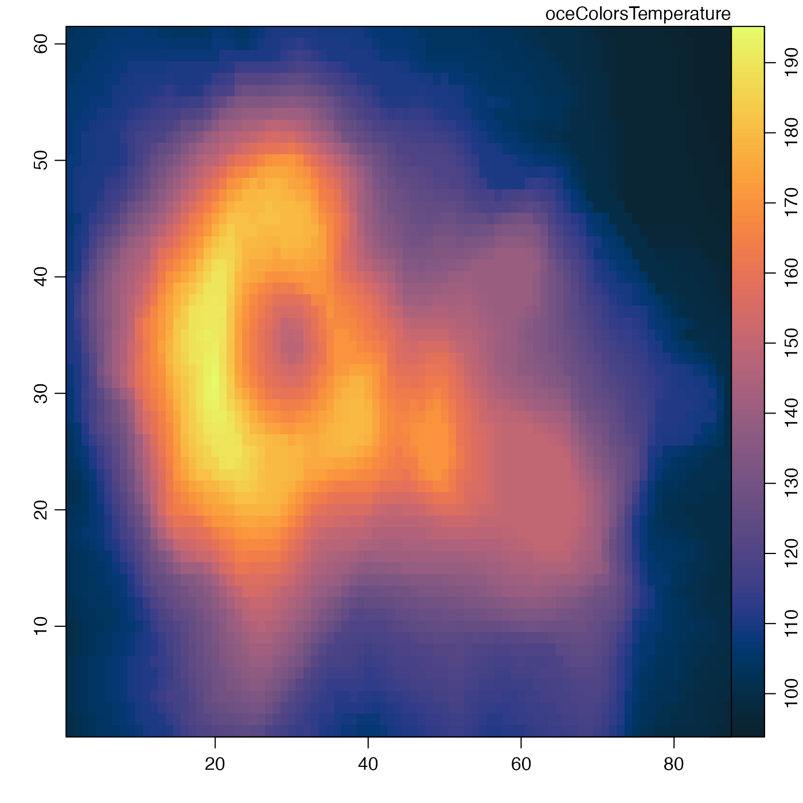

Create a set of colors for displaying temperature values,
based on the scheme devised by Kristen M. Thyng
in her cmcolor Python package
(available at https://github.com/kthyng/cmocean). The
color specifications were downloaded for use here
on 2015-09-29. To avoid changes in oce scripts,
more recent changes to cmcolor have not been
tracked; oceColorsClosure()
has an example of how to incorporate such changes.
oceColorsTemperature(n)
| n | number of colors to create. |
|---|
A vector of color specifications.
Other things related to colors:
colormap(),
oceColors9B(),
oceColorsCDOM(),
oceColorsChlorophyll(),
oceColorsClosure(),
oceColorsDensity(),
oceColorsFreesurface(),
oceColorsGebco(),
oceColorsJet(),
oceColorsOxygen(),
oceColorsPAR(),
oceColorsPalette(),
oceColorsPhase(),
oceColorsSalinity(),
oceColorsTurbidity(),
oceColorsTurbo(),
oceColorsTwo(),
oceColorsVelocity(),
oceColorsViridis(),
oceColorsVorticity(),
ocecolors
